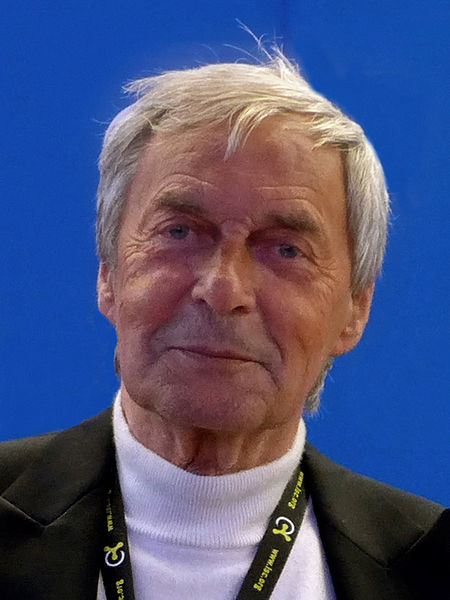
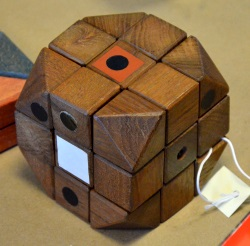
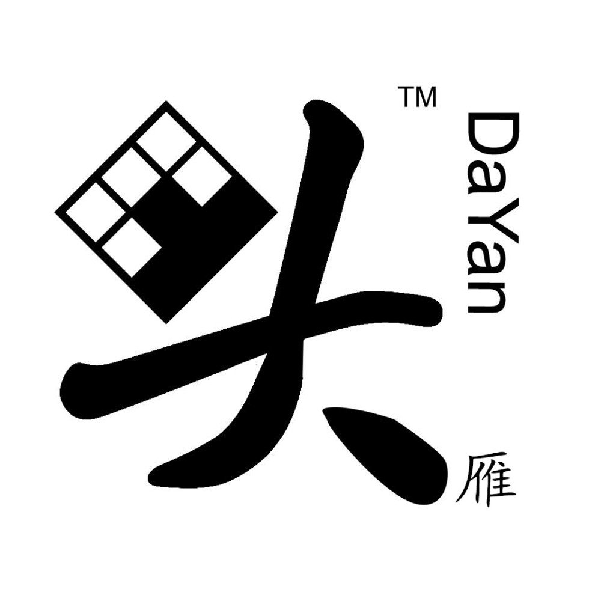
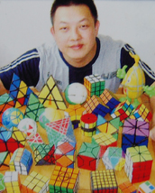
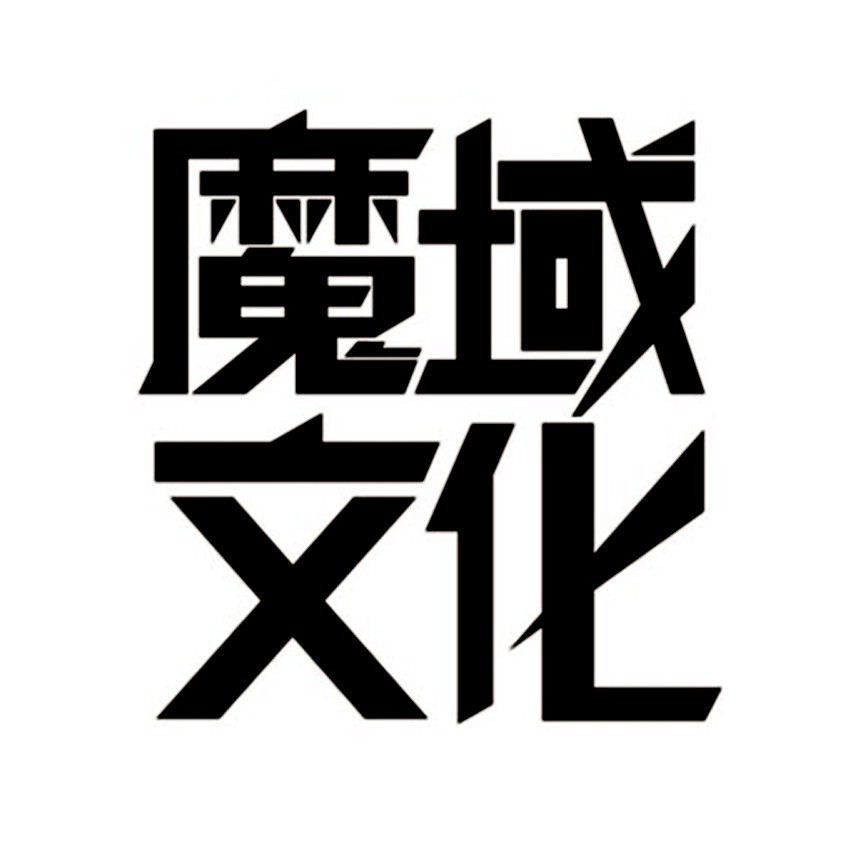
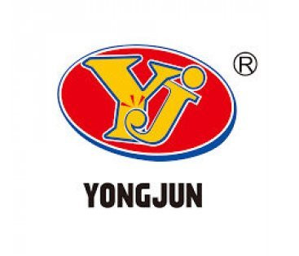
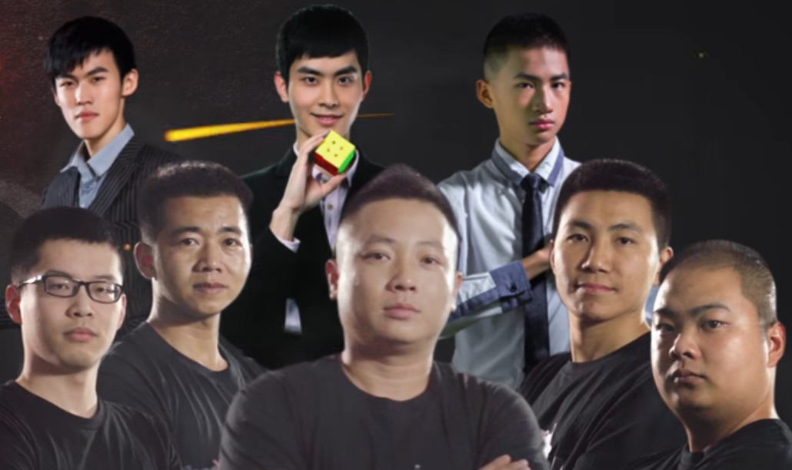
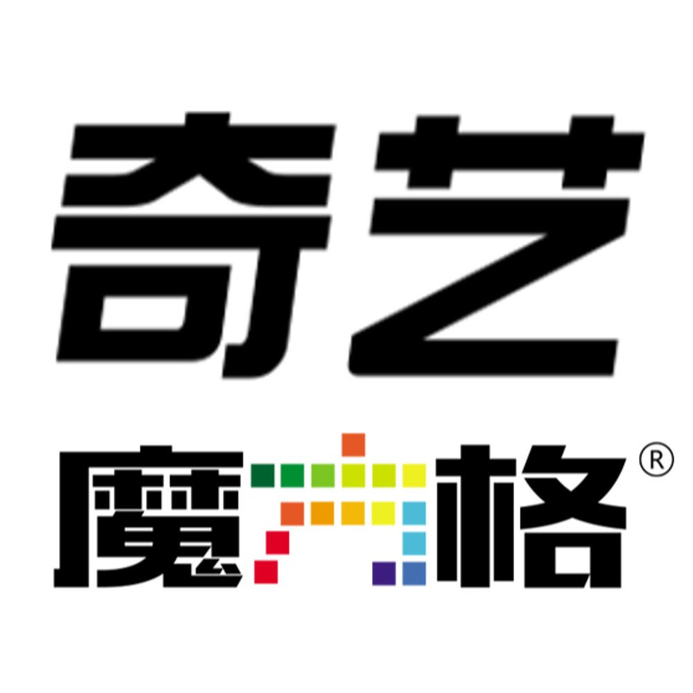
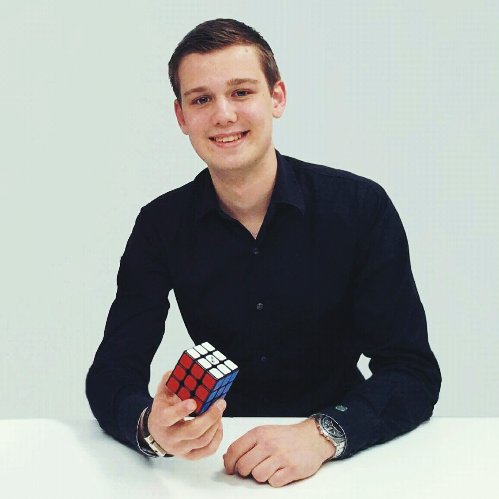
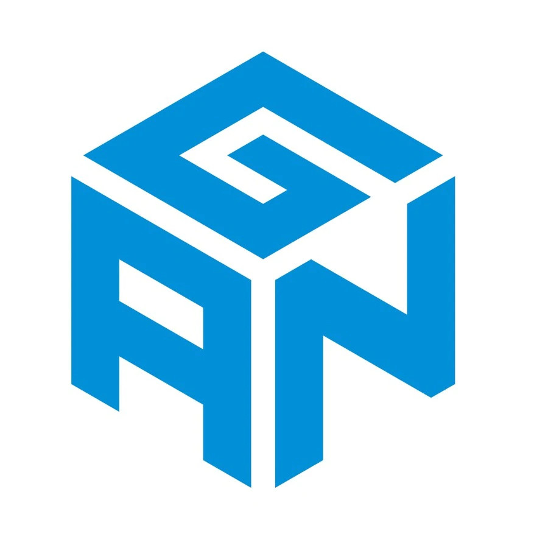

Rubik-kocka háromdimenziós mechanikus logikai játék, amit 1974-ben talált fel, ifjabbik Rubik Ernő. A Rubik-kocka eredeti neve bűvös kocka volt. A szabadalmi leírásban a feltaláló térbeli logikai játékként nevezte el a mechanikus, egyéni logikai játékot, amelynek célja, hogy egy előzetesen összekevert kockából forgatással visszaállítsuk az eredeti, rendezett színösszeállítást, vagyis minden oldalon azonos színű lapocskák legyenek.
Ifjabbik Rubik Ernő

Mostmár idős ifjabbik Rubik Ernő
Verseny Kockák
Rubik rossz

Manapaság annyit érdemes tudni, hogy Rubik Ernőnek köszönhető a kocka feltalálása, viszont a versenyszerűen kockázó emberek távol maradnak a Rubik terméktől, mert a cég több pénzt fektetett a termék levédetésébe, mint egy jó kocka tervezésébe. A Magyarországon és egyéb helyeken kapható Rubik termék arról híres, hogy csak csuklóerősítőnek jó vagy ha éppen nem játszunk vele, ajtóéknek.
Kínai jó
Ironikus módon, ha egy jó kockát szeretnénk akkor számtalan kínai cég gyártmánya közül választhatunk, amik a legjobb minőségüek. Nem hiába tartják ezekkel a kockákkal a világ rekordokat. Ezek közé tartozik: DaYan, Shengshou, MoYu, YJ, QiYi, Yuxin, GAN, Cyclone Boys.
Márkák
DaYan

A DaYan kockák tervezője, Daqing Bao. A DaYan név Bao latin betűkkel leírt kínai nevéből 大烟头 származik. A logón az utolsó karakter látható 头. Legsikeresebb modellek közé tartoznak: Dayan Guhong, Dayan Zhanchi. Sajnos napjainkban már egyik modelljük sem állja meg igazán a helyét.

Bao Daqing
MoYu

MoYu a YongJun nevű cég egy alcége, amit 2012 körül hoztak létre azzal a céllal, hogy egy felületet bíztosítsanak cégen kívüli magánszemélyeknek, hogy piacra tudják juttatni a tervezett kockáikat. A MoYu 魔域 név kettő szó kombinációja, Mo mint bűvös, mert kínában bűvös kockáknak hívják a Rubik kockát és Yu, ami vidéket és földet jelent. A négy karakteres logó 魔域文化, amit gyakran használnak azt jelenti, hogy MoYu kúltúra.

Sikerüket eleinte a MoYu WeiLong és MoYu AoLong-nak köszönhették, majd a WeiLong nevet vitték tovább, készült belőle több verzió is, ami általában sikeres volt. A világ rekordot is egy WeiLong GTS2 M kockával tartja Yusheng Du. Jelenleg a legsikeresebb kockáik, amiket a szülő cég név alatt gyártanak az RS3M és az MGC széria.

Tervezők
QiYi

QiYi MoFangGe hasonlóan a MoYu-hoz azért jött létre, hogy létrehozzon egy felületet ahol a tervezők piacra dobhassák a kockáikat. Sikeres kockáik közé tartoztak a Bullfight, és ennek második verziója a Thunderclap. Sajnos a Thunderclap következő verziói kevésbé lettek elterjedtek. 4x4-es kockájuk a WuQue még mindig egy jó választás.
A legismertebb kockájuk viszont a Valk. Mats Valkról kapta a nevét, aki többszörös világrekord döntő. Több verziója is van, de amiről híres, hogy nagyon sokan akik megvették az első verziót, utána másra nem váltottak és azóta is azt használják.

Mats Valk
Gan

A céget Ganyuan Jiang alapította, aki az első Kínai versenyen nyert 2007-ben. Felesleges lenne felsorolni a sikeres kockáikat, mert az összes az. Ők voltak elsősorban akik elöszőr mágnesezett kockákat gyárottak. Ők fejlesztették ki az első állítható rugós rendszert, majd később mágnes erősség állíthatásra találtak ki rendszereket és egyéb újjításokat is nekik köszönhetünk. Feliks Zemdegs-et, Max Park-ot és Tymon Kolasiński-t is ők szponzorálják.